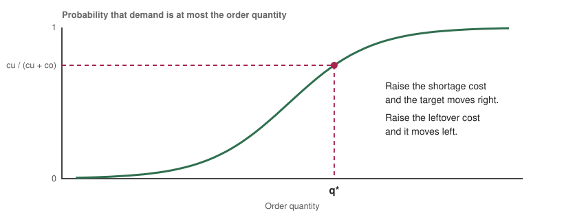
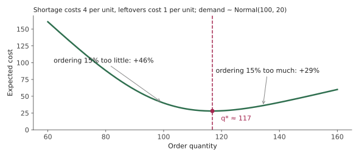
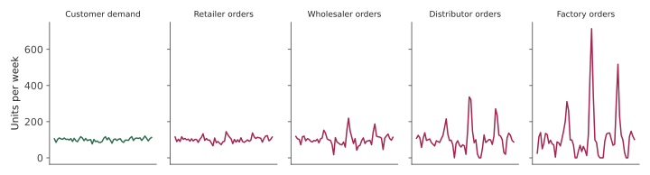

What a wrong demand forecast does to an optimal plan
A supply chain is a long series of decisions made before the facts are in: how much to order, where to stock it, which routes to run, what price to charge. Each decision is easy to optimise if demand is known. Demand is never known, so the real question is how good a plan stays when the numbers behind it are wrong. This post builds the answer from the smallest useful model up to a multi-stage chain, with worked numbers and a simulation of my own, and then connects it to my work on pricing under learned demand.
1. The newsvendor: the smallest useful model
A vendor must choose how many newspapers to stock before knowing how many will sell. Order too few and each missing sale costs the shortage cost, cu (the profit lost). Order too many and each leftover copy costs the overage cost, co (the loss on unsold stock). The classical result, traced to Arrow, Harris and Marschak (1951), is that the best order quantity q* is the point where the probability of demand falling at or below it equals the critical ratio cu / (cu + co).
The intuition is a balance. Ordering one more unit is worth it if the chance it sells, times the profit, exceeds the chance it does not, times the loss. That balance tips at exactly the critical ratio, so the answer depends on the whole demand distribution, not only its average.

2. A worked example
Suppose demand is normally distributed with mean 100 and standard deviation 20, a missing sale costs 4 and a leftover unit costs 1. The critical ratio is 4 / (4 + 1) = 0.8. The 80th percentile of a normal distribution is about 0.84 standard deviations above the mean, so q* = 100 + 0.84 × 20 ≈ 117. The best plan orders noticeably more than average demand, because running out is four times as costly as having leftovers. Its expected cost is about 28.0.
Now compare two mistakes of the same size. Order 15% less than q* (about 99 units) and the expected cost rises to about 41.0, which is 46% worse. Order 15% more (about 134 units) and the cost is about 36.1, which is 29% worse. Both are costly, and they are not symmetric, because the two sides of the mistake are priced differently.

3. What a wrong forecast costs
Keep the same costs but suppose the planner’s forecast of the mean demand is wrong by 10 units either way, while the true mean is still 100. Planning with a mean of 90 gives an order of about 107 and an expected cost of about 31.9, which is 14% above the best possible. Planning with a mean of 110 gives an order of about 127 and a cost of about 31.0, which is 11% above. So a 10% forecast error in the mean costs roughly 11 to 14% in decisions here, and a bias in the cheap direction is not harmless. These figures are for one set of costs and a normal distribution. The general point is that error is converted into cost by the cost structure, so two forecasts with the same error can have different decision costs.
4. Forecast first, optimise second, and why that can go wrong
The usual workflow is predict-then-optimise: fit a demand model, treat its output as truth, and optimise against it. The trouble is that the model with the lowest forecast error is not necessarily the one that leads to the cheapest decisions, because some errors are costlier than others, as Section 3 shows. Adam Elmachtoub and Paul Grigas formalised this in “Smart Predict, then Optimize”, and proposed training the predictor on the decision cost directly instead of on prediction error.
A related line goes straight from data to decisions. Gah-Yi Ban and Cynthia Rudin’s “big data newsvendor” learns the order quantity directly from features such as season and price. Dimitris Bertsimas and Nathan Kallus’s work on prescriptive analytics lays out the broader approach of letting data suggest the decision.
5. Planning for being wrong
Stochastic programming. George Dantzig’s 1955 “Linear programming under uncertainty” started the field of optimising against a set of possible futures, and John Birge and François Louveaux’s textbook is the standard introduction.
Sample average approximation. Instead of an exact formula for the demand distribution, optimise against a sample of past demands. Anton Kleywegt, Alexander Shapiro and Tito Homem-de-Mello analysed this method in 2002. Retsef Levi, Robin Roundy and David Shmoys showed that sampling-based policies for stochastic inventory problems can come with provable guarantees of being near-optimal.
Robust optimisation. Bertsimas and Melvyn Sim’s “price of robustness” (2004) lets you choose how many uncertain parameters may go against you at once, trading a little average performance for protection in bad cases.
Distribution-free and distributionally robust methods. Herbert Scarf’s 1958 min-max solution gives an order quantity that protects against the worst distribution consistent with a known mean and variance. Erick Delage and Yinyu Ye (2010) extended the idea to data-driven problems with uncertainty about the distribution itself.
6. Many periods, many stages
Real inventory is not a single decision. The standard policy for repeated ordering is a base-stock or order-up-to rule: each period, order enough to bring the inventory position back up to a target level. When there is a fixed cost for placing an order, Scarf’s 1960 result shows that the best policy takes the (s, S) form: when stock falls to s, order up to S. With several stages (a factory, a warehouse, a store), Andrew Clark and Scarf’s 1960 multi-echelon model showed how the problem can be broken into one stage at a time.
Lead time is the quiet driver of all of this. A longer lead time means you must cover demand for longer without a chance to correct, so the order-up-to level rises and so does the cost of a forecast error.
7. Why small errors travel: the bullwhip effect
Supply chains have a second problem: errors do not stay where they start. Hau Lee, V. Padmanabhan and Seungjin Whang described the bullwhip effect in 1997, in which small swings in consumer demand become large swings in factory orders. They identified four causes: each stage forecasting from the orders it receives, order batching, price fluctuations, and rationing and shortage gaming. The effect was visible much earlier in Jay Forrester’s work on industrial dynamics, and in the classroom “beer game” studied by John Sterman in 1989.
To see it, I simulated a four-stage chain. Customer demand is random with a standard deviation of 10 units a week. Each stage uses a simple order-up-to policy with a lead time of two weeks, a five-week moving-average forecast, and a safety factor of 1.645, and orders from the stage above it. Order variance multiplies at every stage: about 2.1 times customer demand at the retailer, 6.8 times at the wholesaler, 24 times at the distributor and 85 times at the factory. The standard deviation grows from 10 to about 15, 26, 50 and 94 units a week. For the first stage, the closed-form result of Frank Chen, Zvi Drezner, Jennifer Ryan and David Simchi-Levi (2000), a variance ratio of at least 1 + 2L/p + 2L²/p², comes to about 2.12 with these settings, and my simulation gave 2.1.

Nothing in this chain behaves irrationally. Each stage follows a sensible rule. The amplification comes from reacting to a forecast built from a noisy signal, plus the lead time. The standard remedies target those causes: share real demand data upstream instead of orders, use smaller and more frequent batches, and keep prices stable.
8. Optimisation also decides where things go
Inventory is one of several decisions in a supply chain. Choosing where to put warehouses, which suppliers to use and how to route trucks are problems of linear and integer programming, and routing in particular goes back to Dantzig and John Ramser’s 1959 “truck dispatching problem”. These problems have their own uncertainty: travel times vary, demand moves between locations, and disruptions close routes. The methods in Section 5 apply to them as well, and the interesting questions are usually about how much a plan degrades when its inputs are estimated and not known.
9. Where my own work fits
The same structure appears in a preprint I wrote, mentored by Prof. Devansh Jalota: Estimation Robustness of Static Congestion Pricing Under Learned Demand. Congestion pricing has an old idea behind it, Arthur Pigou’s 1920 argument that a charge equal to the cost a driver imposes on others can improve how a road network is used. A toll that stays fixed through the day is a decision made from an estimate of demand, so any error in the estimate is carried into the price. The question is how much the decision suffers when demand has been learned from data, which is the supply chain question of Sections 3 and 4 in a road network.
A related allocation question appears in my work on LLM agent pipelines, where limited checking effort has to be spread across tools whose quality may be degrading unseen. In both settings, the decision-maker has to act on an estimate, and the useful analysis asks how wrong the answer can get.
What to take away
Judge a forecast by the decisions it leads to, not only by its error. Report a distribution or an interval alongside every point forecast, because the best decision depends on it. Check which direction of error is more expensive before choosing a bias. Test a plan against forecasts that are wrong in realistic ways before trusting it. Look at where error is amplified. In a chain, the stage that reacts to a forecast of a forecast sees the largest swings.
Further reading
Arrow, K. J., Harris, T. and Marschak, J. (1951). Optimal inventory policy. Econometrica.
Scarf, H. (1958). A min-max solution of an inventory problem. In Studies in the Mathematical Theory of Inventory and Production.
Scarf, H. (1960). The optimality of (S, s) policies in the dynamic inventory problem. In Mathematical Methods in the Social Sciences.
Clark, A. J. and Scarf, H. (1960). Optimal policies for a multi-echelon inventory problem. Management Science.
Dantzig, G. B. (1955). Linear programming under uncertainty. Management Science.
Dantzig, G. B. and Ramser, J. H. (1959). The truck dispatching problem. Management Science.
Birge, J. R. and Louveaux, F. (2011). Introduction to Stochastic Programming. Springer.
Kleywegt, A. J., Shapiro, A. and Homem-de-Mello, T. (2002). The sample average approximation method for stochastic discrete optimization. SIAM Journal on Optimization.
Elmachtoub, A. N. and Grigas, P. (2022). Smart “Predict, then Optimize”. Management Science.
Ban, G.-Y. and Rudin, C. (2019). The big data newsvendor: practical insights from machine learning. Operations Research.
Bertsimas, D. and Kallus, N. (2020). From predictive to prescriptive analytics. Management Science.
Bertsimas, D. and Sim, M. (2004). The price of robustness. Operations Research.
Delage, E. and Ye, Y. (2010). Distributionally robust optimization under moment uncertainty with application to data-driven problems. Operations Research.
Levi, R., Roundy, R. O. and Shmoys, D. B. (2007). Provably near-optimal sampling-based policies for stochastic inventory control models. Mathematics of Operations Research.
Lee, H. L., Padmanabhan, V. and Whang, S. (1997). Information distortion in a supply chain: the bullwhip effect. Management Science.
Chen, F., Drezner, Z., Ryan, J. K. and Simchi-Levi, D. (2000). Quantifying the bullwhip effect in a simple supply chain. Management Science.
Sterman, J. D. (1989). Modeling managerial behavior: misperceptions of feedback in a dynamic decision making experiment. Management Science.
Pigou, A. C. (1920). The Economics of Welfare. Macmillan.
Appendix: credits
Figure 1 is my own schematic. Figures 2 and 3 are computed by code I wrote for this post: Figure 2 from the normal-distribution cost formula, and Figure 3 from the simulation described in Section 7 (a single run with a fixed random seed). The numbers in the text come from the same calculations.